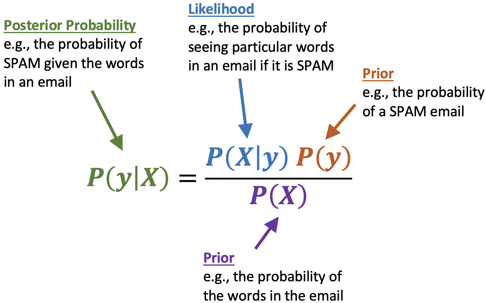
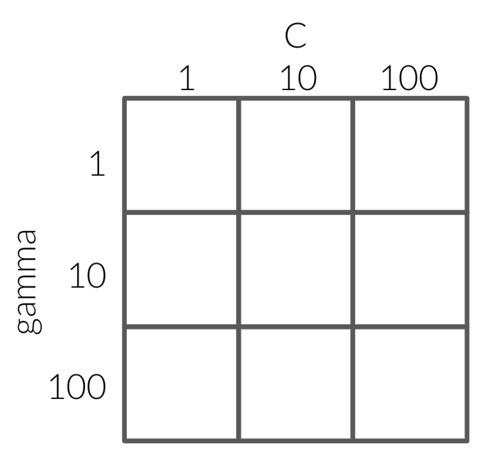

Naive Bayes and Hyperparameter Optimization
Contents
6. Naive Bayes and Hyperparameter Optimization#
6.1. Lecture Learning Objectives#
Explain the naive assumption of naive Bayes.
Predict targets by hands-on toy examples using naive Bayes.
Use
scikit-learn’sMultiNomialNB.Use
predict_probaand explain its usefulness.Explain the need for smoothing in naive Bayes.
Explain how
alphacontrols the fundamental tradeoff.Explain the need for hyperparameter optimization
Carry out hyperparameter optimization using
sklearn’sGridSearchCVandRandomizedSearchCV.
6.2. Five Minute Recap/ Lightning Questions#
What kind of preprocessing must I do if I have a feature with categories that have an order to them?
How many columns do I need for a binary feature?
What tool do we use to preprocess all our pipelines and build a model without breaking the golden rule?
Between
Pipeline()andmake_pipeline(), which one assigns names to the steps on our behalf?In text data, what are our features made up of?
6.2.1. Some lingering questions#
What algorithm works well with our
spam,non spamproblem?How do I tune multiple hyperparameters at once without writing manual for loops?
6.3. Naive Bayes introduction - spam/non spam#
Last lecture we saw this spam classification problem where we used CountVectorizer() to vectorize the text into features and used an SVC to classify each text message into either a class of spam or non spam based on the frequency of each word in the text.
\(X = \begin{bmatrix}\text{"URGENT!! You have been selected to receive a £900 prize reward!",}\\ \text{"Lol your always so convincing."}\\ \text{"Congrats! 1 year special cinema pass for 2 is yours. call 09061209465 now!"}\\ \end{bmatrix}\) and \(y = \begin{bmatrix}\text{spam} \\ \text{non spam} \\ \text{spam} \end{bmatrix}\)
Today we will see a more sophisticated but similar way of classifying text data using and algorithm called Naive Bayes. For years, the best spam filtering methods used naive Bayes and it has a relatively cheap computational cost.
Additional applications of Naive Bayes include:
Folder ordering, document clustering, etc.
Sentiment analysis (e.g., movies, restaurants, etc.)
Classifying products into groups based on descriptions
6.4. Naive Bayes from scratch#
A simplified explanation of Naive Bayes is that it will estimate the probability that an email is spam or not based on how frequent the words in the email occur in known spam and non-spam emails.
To fully understand what Naive Bayes does when classifying data, let‚Äôs do some naive Bayes calculations by handüñê ü§ö .
Yes, there is going to be some math here but it’s going to be really helpful in understanding how this algorithm works!
Below we have a few texts and they are classed as either being spam or non spam.
import pandas as pd
df = pd.DataFrame({'X': [
"URGENT!! As a valued network customer you have been selected to receive a £900 prize reward!",
"Lol you are always so convincing.",
"Sauder has interesting courses.",
"URGENT! You have won a 1 week FREE membership in our £100000 prize Jackpot!",
"Had your mobile 11 months or more? U R entitled to Update to the latest colour mobiles with camera for Free!",
"Sauder has been interesting so far."],
'y': ["spam", "non spam", "non spam", "spam", "spam", "non spam"]})
df
| X | y | |
|---|---|---|
| 0 | URGENT!! As a valued network customer you have... | spam |
| 1 | Lol you are always so convincing. | non spam |
| 2 | Sauder has interesting courses. | non spam |
| 3 | URGENT! You have won a 1 week FREE membership ... | spam |
| 4 | Had your mobile 11 months or more? U R entitle... | spam |
| 5 | Sauder has been interesting so far. | non spam |
We know that we need to encode categorical data and transform it to numeric data to use it with machine learning since categorical columns throw an error when we try to fit our model.
This sounds like a job for CountVectorizer() since we have words that need to be converted into numerical features!
Here we are going to set max_features=2
to create a toy example that is easy to follow in our manual calculations.
We are also setting stop_words='english'
so we are getting meaningful words as features and not commonly used words
such as “and”, “or”, etc
(these are referred to as “stop words”).
from sklearn.feature_extraction.text import CountVectorizer
# Transform the data with the count vectorizer
count_vect = CountVectorizer(max_features=2, stop_words='english')
data = count_vect.fit_transform(df['X']).toarray() # Returns a sparse matric which we convert to an array
# Put together a df with the results
train_bow_df = pd.DataFrame(data, columns=count_vect.get_feature_names_out(), index=df['X'].tolist())
train_bow_df['target'] = df['y'].tolist() # tolist() needed since indices are different
train_bow_df.sort_values(by='target')
| sauder | urgent | target | |
|---|---|---|---|
| Lol you are always so convincing. | 0 | 0 | non spam |
| Sauder has interesting courses. | 1 | 0 | non spam |
| Sauder has been interesting so far. | 1 | 0 | non spam |
| URGENT!! As a valued network customer you have been selected to receive a £900 prize reward! | 0 | 1 | spam |
| URGENT! You have won a 1 week FREE membership in our £100000 prize Jackpot! | 0 | 1 | spam |
| Had your mobile 11 months or more? U R entitled to Update to the latest colour mobiles with camera for Free! | 0 | 0 | spam |
# add 1 to all values to avoid 0s to numeric columns only
train_bow_df[train_bow_df.columns[:-1]]+1
| sauder | urgent | |
|---|---|---|
| URGENT!! As a valued network customer you have been selected to receive a £900 prize reward! | 1 | 2 |
| Lol you are always so convincing. | 1 | 1 |
| Sauder has interesting courses. | 2 | 1 |
| URGENT! You have won a 1 week FREE membership in our £100000 prize Jackpot! | 1 | 2 |
| Had your mobile 11 months or more? U R entitled to Update to the latest colour mobiles with camera for Free! | 1 | 1 |
| Sauder has been interesting so far. | 2 | 1 |
# count_vect.get_stop_words()
Suppose we are given 2 new text messages and we want to find the targets for these examples, how do we do it using naive Bayes?
First, let’s get a numeric representation of our made-up new text messages.
test_texts = ["URGENT! Free!!", "I like Sauder"]
data = count_vect.transform(test_texts).toarray()
test_bow_df = pd.DataFrame(data, columns=count_vect.get_feature_names_out(), index=test_texts)
test_bow_df
| sauder | urgent | |
|---|---|---|
| URGENT! Free!! | 0 | 1 |
| I like Sauder | 1 | 0 |
Let’s look at the text: “URGENT! Free!!” and ask the question: “Is this message spam?”
What we want to use the Naive Bayes algorithm for
is figuring out the probability that a text message is either spam or not spam given that it contains the words “URGENT! Free!!”, which can be expressed like so (the | means “given that”/”condition upon”):
Once we have calculated these probabilities, we compare the probabilities for spam and non-spam and classify each text according to the largest probability.
So what does the calculation for the probabilities look like? Naive Bayes relies on Bayes Theorem to compute these numbers, and it looks like this (the posterior probability corresponds to our equations above):
{kind=link}
Substituting into Bayes rule for the “Urgent Free” message, we get the following for computating the probability that this message is spam:
And a similar equation for whether it is not spam
Since our question is “Is this message spam” we want to compare this probabilities and answer “yes” if the spam-probability is larger than the non-spam probability. In other words, the message is spam if the following condition is true:
Now, there are two reasons naive Bayes is so easy:
We can cancel out the denominator which leads us to this:
We can simplify the numerator via the Naive Bayes approximation.
6.4.1. Naive Bayes’ approximation#
The reason for the name “Naive” is that word order does not matter in the calculation and that we can assume each feature (word) is conditionally independent (assume that all features in \(X\) are mutually independent, conditional on the target class). It might sound too simplistic to not care about word order and grammatical rules, but this has shown to work well enough in practice and dramatically simplifies our calculation.
If we don’t assume independence, it’s a much bigger probability space, so there won’t be enough training examples to learn. We’d need examples for every combination of words occurring together.
Now we just need to calculate the probabilities for each word individually from the training data!
6.4.2. Estimating \(P(\text{spam} \mid \text{message})\) (The left side of our equation)#
We need the following:
Prior probability:
\(P(\text{spam})\)
Conditional probabilities:
\(P(\text{sauder} = 0 \mid \text{spam})\)
\(P(\text{urgent} = 1 \mid \text{spam})\)
Let’s remind us of what our data looks like:
train_bow_df
| sauder | urgent | target | |
|---|---|---|---|
| URGENT!! As a valued network customer you have been selected to receive a £900 prize reward! | 0 | 1 | spam |
| Lol you are always so convincing. | 0 | 0 | non spam |
| Sauder has interesting courses. | 1 | 0 | non spam |
| URGENT! You have won a 1 week FREE membership in our £100000 prize Jackpot! | 0 | 1 | spam |
| Had your mobile 11 months or more? U R entitled to Update to the latest colour mobiles with camera for Free! | 0 | 0 | spam |
| Sauder has been interesting so far. | 1 | 0 | non spam |
Prior probability (what proportion of messages are spam, aka what we would guess with no information about the words in the message)
\(P(\text{spam}) = 3/6\)
Conditional probabilities
\(P(\text{sauder} = 0 \mid \text{spam}) = 3/3\)
Given target is spam, how often is “sauder”= 0?
\(P(\text{urgent} = 1 \mid \text{spam}) = 2/3\)
Now we have everything we need to do our calculations!
sauder0_spam = 3/3
urgent1_spam = 2/3
spam_prior = 3/6
spam_prob = sauder0_spam * urgent1_spam * spam_prior
spam_prob
0.3333333333333333
Remember that we simplified away the denominator, so the number above doesn’t correspond to an actual probability, but we can still use it to compare the estimation of spam versus non-spam.
Ok, So we’ve done our left side! Now we have to do the right!
6.4.3. Estimating \(P(\text{non spam} \mid \text{message})\) (The right side of our equation)#
Now we need the following:
Prior probability:
\(P(\text{non spam})\)
Conditional probabilities:
\(P(\text{sauder} = 0 \mid \text{non spam})\)
\(P(\text{urgent} = 1 \mid \text{non spam})\)
Again we use the data to calculate these probabilities.
train_bow_df
| sauder | urgent | target | |
|---|---|---|---|
| URGENT!! As a valued network customer you have been selected to receive a £900 prize reward! | 0 | 1 | spam |
| Lol you are always so convincing. | 0 | 0 | non spam |
| Sauder has interesting courses. | 1 | 0 | non spam |
| URGENT! You have won a 1 week FREE membership in our £100000 prize Jackpot! | 0 | 1 | spam |
| Had your mobile 11 months or more? U R entitled to Update to the latest colour mobiles with camera for Free! | 0 | 0 | spam |
| Sauder has been interesting so far. | 1 | 0 | non spam |
Prior probability
\(P(\text{non spam}) = 3/6\)
Conditional probabilities
\(P(\text{sauder} = 0 \mid \text{non spam}) =1/3\)
Given the target is non spam, how ofter is “sauder”=0?
\(P(\text{urgent} = 1 \mid \text{non spam}) = 0/3\)
Time for our calculation:
non_spam_prior = 3/6
sauder0_non_spam = 1/3
urgent1_non_spam = 0/3
non_spam_prob = non_spam_prior * sauder0_non_spam * urgent1_non_spam
non_spam_prob
0.0
So for the question: “Is the text ‘Urgent!! Free!’ spam”, our initial equation:
has been calculated to
0.33333… > 0.0
Which is True (0.333 is bigger than 0), which means that the answer for this text is “Yes it to be classified as spam”.
Now let’s see how we can do this in sklearn and see if the results are the same.
6.5. Naive Bayes classifier in sklearn#
Let’s split up our data into our features and targets:
X_train = train_bow_df.drop(columns='target')
y_train = train_bow_df['target']
Here I am selecting the first row of our test set which was the URGENT! Free!! text.
test_bow_df.iloc[[0]]
| sauder | urgent | |
|---|---|---|
| URGENT! Free!! | 0 | 1 |
The main Naive Bayes classifier in sklearn is called MultinomialNB and exists in the naive_bayes module.
Here we use it to predict the class label of our test text-message.
from sklearn.naive_bayes import MultinomialNB
nb = MultinomialNB()
nb.fit(X_train, y_train)
nb.predict(test_bow_df.iloc[[0]])
array(['spam'], dtype='<U8')
Instead of using predict, we can use something called predict_proba() with Naive Bayes classifier which gives us the probabilities of each class happening.
predictreturns the class with the highest probability.predict_probagives us the actual probability scores.
Note: Although naive Bayes is known as a decent classifier, it is known to be a bad estimator, so the exact probability outputs from predict_proba are not to be taken too seriously. The important is which class’s probability is largest, not the exact number.
prediction = nb.predict_proba(test_bow_df.iloc[[0]])
pd.DataFrame(prediction, columns=nb.classes_)
| non spam | spam | |
|---|---|---|
| 0 | 0.25 | 0.75 |
Recall that when we worked through a toy example by hand, we estimated
ùëÉ(non-spam‚à£message) = 0
ùëÉ(spam‚à£message) = 0.3333
The sklearn naive bayes classifier gives the same classification as we calculated by hand, but not exactly the same probabilities, why not?
The scores we computed are not normalized. Remember that we ignored the denominator. The ones from sklearn ones are normalized so that they sum to 1.
The sklearn model is using something called “smoothing” to avoid the problem of zero probabilities.
6.6. Smoothing by adding noise to avoid zero probabilities#
Why does the model do smoothing? Well, let’s look at our conditional probabilities again from the right side of our equation.
Conditional probabilities
\(P(\text{sauder} = 0 \mid \text{non spam}) = 1/3\)
\(P(\text{urgent} = 1 \mid \text{non spam}) = 0/3\)
Is it wise to say that given a text that is non spam the probability of “urgent” occurring is exactly 0?
Not really. We only are using 6 examples here and setting this to 0 (and \(P(\text{urgent} = 1 \mid \text{non spam}) = 0\)) is making the whole right side of the equation equal to 0. Naive Bayes “naively” multiplies all the feature likelihoods together, and if any of the terms is zero, it’s going to void all other evidence and the probability of the class is going to be zero.
This is somewhat problematic, since the absence of a single word will bring the probability down to zero even if the rest of the message indicates that it is highly likely to be spam/non-spam. We have limited training data and if we do not see a feature occurring with a class, it doesn’t mean it would never occur with that class.
How can we fix this?
A straight-forward way to avoid zero probabilities is to add some noise in the model by adding the same value (\(\alpha\)) to all the counts, e.g. if we add 1, then the smallest count will be 1 instead of zero and the biggest will be max+1 (2 in our example). This is called Additive/Laplace smoothing.
Generally, we set alpha (\(\alpha\)) equal to 1 and in scikit-learn (the default value) we control it using hyperparameter alpha.
This means that we give an instance of every word appearing once with a target of spam, as well as a target of non spam.
6.6.1. alpha hyperparameter and the fundamental tradeoff#
High alpha \(\rightarrow\) underfitting
We are adding large counts to everything and so we are diluting the signal in the data
Low alpha \(\rightarrow\) overfitting
6.7. Naive Bayes on Real Data#
Let’s try scikit-learn’s implementation of Naive Bayes on a modified version of Kaggle’s Disaster Tweets.
tweets_df = pd.read_csv("data/tweets_mod.csv")
tweets_df
| text | target | |
|---|---|---|
| 0 | YOU THERE, PACHIRISU PUNK, PREPARE TO BE DESTR... | 0 |
| 1 | Face absolutely flattened against the glass of... | 0 |
| 2 | Bruhhhh I screamed when she said that üò≠ MY HEA... | 0 |
| 3 | Granting warrants to "authorise police to ente... | 0 |
| 4 | Ang lala hahaha I woke up to a deluge of death... | 0 |
| ... | ... | ... |
| 3995 | As it seems to be fairly contagious, I'm think... | 1 |
| 3996 | #BoundBrookFire Firefighters from several diff... | 1 |
| 3997 | It is turning out to be a very violent storm a... | 1 |
| 3998 | A raging fire in Bound Brook, New Jersey, on S... | 1 |
| 3999 | Hazardous eruption a possibility after Philipp... | 1 |
4000 rows × 2 columns
Let’s split it into our training and test sets as well as our features and target objects.
from sklearn.model_selection import train_test_split
train_df, test_df = train_test_split(tweets_df, test_size=0.2, random_state=123)
X_train, y_train = train_df["text"], train_df["target"]
X_test, y_test = test_df["text"], test_df["target"]
train_df
| text | target | |
|---|---|---|
| 1420 | How low have you sunk Alice, just clickbait fo... | 0 |
| 1638 | Watching this tonight as I was working yesterd... | 0 |
| 616 | January 14, 2020 at about 08:30 am, personnel ... | 0 |
| 184 | Next oil spill you drone strike the CEO's neig... | 0 |
| 2075 | Another 6.0 aftershock has hit Puerto Rico aft... | 1 |
| ... | ... | ... |
| 1122 | Aftershock comics. We prefer working in partne... | 0 |
| 1346 | Two platforms collide to do good, how awesome ... | 0 |
| 3454 | More than 23,000 people have been evacuated an... | 1 |
| 3437 | I‚Äôm traumatised üò≠ | 1 |
| 3582 | A volcano near the Philippine capital is spewi... | 1 |
3200 rows × 2 columns
Next, we make a pipeline and cross-validate!
from sklearn.pipeline import make_pipeline
from sklearn.model_selection import cross_validate
pipe_nb = make_pipeline(
CountVectorizer(),
MultinomialNB()
)
scores = cross_validate(pipe_nb, X_train, y_train, return_train_score=True)
pd.DataFrame(scores)
| fit_time | score_time | test_score | train_score | |
|---|---|---|---|---|
| 0 | 0.057878 | 0.010434 | 0.796875 | 0.948438 |
| 1 | 0.050771 | 0.009572 | 0.801562 | 0.948438 |
| 2 | 0.047406 | 0.009335 | 0.801562 | 0.946875 |
| 3 | 0.045360 | 0.008559 | 0.837500 | 0.945703 |
| 4 | 0.045094 | 0.008602 | 0.814063 | 0.944531 |
pd.DataFrame(scores).mean()
fit_time 0.049302
score_time 0.009300
test_score 0.810312
train_score 0.946797
dtype: float64
It looks like we are overfitting to the training data and would be advised to try tune/optimize our hyperparameters (such as the amount of noise added).
6.8. Let’s Practice#
Using naive Bayes by hand, what class would naive Bayes predict for the second test text message: “I like Sauder”?
train_bow_df
| sauder | urgent | target | |
|---|---|---|---|
| URGENT!! As a valued network customer you have been selected to receive a £900 prize reward! | 0 | 1 | spam |
| Lol you are always so convincing. | 0 | 0 | non spam |
| Sauder has interesting courses. | 1 | 0 | non spam |
| URGENT! You have won a 1 week FREE membership in our £100000 prize Jackpot! | 0 | 1 | spam |
| Had your mobile 11 months or more? U R entitled to Update to the latest colour mobiles with camera for Free! | 0 | 0 | spam |
| Sauder has been interesting so far. | 1 | 0 | non spam |
test_bow_df.iloc[[1]]
| sauder | urgent | |
|---|---|---|
| I like Sauder | 1 | 0 |
Let’s setup some of the steps together:
spam side
Prior probability:
\(P(\text{spam}) = \)
Conditional probabilities:
\(P(\text{sauder} = 1 \mid \text{spam}) = \)
\(P(\text{urgent} = 0 \mid \text{spam}) = \)
\(P(\textrm{spam}|\text{sauder} = 1, \text{urgent} = 0) = \)
non spam side
Prior probability:
\(P(\text{non spam}) = \)
Conditional probabilities:
\(P(\text{sauder} = 1 \mid \text{non spam}) = \)
\(P(\text{urgent} = 0 \mid \text{non spam}) = \)
\(P(\textrm{non spam}|\text{sauder} = 1, \text{urgent} = 0) =\)
Final Class
Which class’s probability is greater?
Solutions!
Spam:
1.\(3/6\)
2. \(0/3\) and \(1/3\)
3.\(\frac{0}{3} * \frac{1}{3} *\frac{3}{6} = 0\)
Non-spam:
\(3/6\)
\(2/3\) and \(3/3\)
\(\frac{2}{3} * \frac{3}{3} *\frac{3}{6} = 1/3\)
1/3 > 0 so the message is not classified as spam
6.9. Automated Hyperparameter Optimization#
So far we’ve seen quite a few different hyperparameters for different models:
max_depthandmin_samples_splitfor decision trees.n_neighborsandweightsfor K-Nearest Neighbours.gammaandCfor SVMs with RBF.alphafor NaiveBayes.We have also seen hyperparameters for our transformations like
strategyfor ourSimpleImputer().
We have seen how important these are and that they can optimize your model, but we haven’t seen an effective way to optimize them; so far we have only used primitive for loops. Picking reasonable hyperparameters is important as it helps avoid underfit or overfit models.
6.9.1. The problem with hyperparameters#
We may have a lot of them.
Nobody knows exactly how to choose them, there is no single function/formula to apply.
May interact with each other in unexpected ways.
The best settings depend on the specific data/problem.
Can take a long time to execute.
6.9.2. How to pick hyperparameters#
Manual hyperparameter optimization (What we’ve done so far)
We may have some intuition about what might work.
It takes a lot of work.
OR…
Automated hyperparameter optimization (hyperparameter tuning)
Reduce human effort.
Less prone to error.
Data-driven approaches may be effective.
It may be hard to incorporate intuition.
Overfitting on the validation set.
6.9.3. Automated hyperparameter optimization#
Exhaustive grid search:
sklearn.model_selection.GridSearchCVRandomized hyperparameter optimization:
sklearn.model_selection.RandomizedSearchCV
The “CV” stands for cross-validation; these methods have built-in cross-validation
6.9.4. Let’s Apply it#
Let’s bring back the cities dataset we worked with in previous lectures.
cities_df = pd.read_csv("data/canada_usa_cities.csv")
train_df, test_df = train_test_split(cities_df, test_size=0.2, random_state=123)
X_train, y_train = train_df.drop(columns=['country']), train_df['country']
X_test, y_test = test_df.drop(columns=['country']), test_df['country']
X_train
| longitude | latitude | |
|---|---|---|
| 160 | -76.4813 | 44.2307 |
| 127 | -81.2496 | 42.9837 |
| 169 | -66.0580 | 45.2788 |
| 188 | -73.2533 | 45.3057 |
| 187 | -67.9245 | 47.1652 |
| ... | ... | ... |
| 17 | -76.3305 | 44.1255 |
| 98 | -74.7287 | 45.0184 |
| 66 | -121.4944 | 38.5816 |
| 126 | -79.5656 | 43.6436 |
| 109 | -66.9195 | 44.8938 |
167 rows × 2 columns
y_train
160 Canada
127 Canada
169 Canada
188 Canada
187 Canada
...
17 USA
98 Canada
66 USA
126 Canada
109 Canada
Name: country, Length: 167, dtype: object
6.10. Exhaustive grid search - Trying ALL the options#
We need to first decide on our model and which hyperparameters we want to tune.
Let’s use an SVC classifier as an example here.
Next, we built a dictionary called param_grid and we specify the values we wish to look over for the hyperparameter.
param_grid = {"gamma": [0.1, 1.0, 10, 100]}
Then we pass our model to the GridSearchCV object.
from sklearn.svm import SVC
from sklearn.model_selection import GridSearchCV
grid_search = GridSearchCV(SVC(), param_grid, verbose=2)
Assigning verbose=2 tells GridSearchCV to print some output while it’s running.
To actually execute the grid search,
we need to call fit on the training data.
Remember that CV is built in,
so we don’t need to worry about that.
grid_search.fit(X_train, y_train)
Fitting 5 folds for each of 4 candidates, totalling 20 fits
[CV] END ..........................................gamma=0.1; total time= 0.0s
[CV] END ..........................................gamma=0.1; total time= 0.0s
[CV] END ..........................................gamma=0.1; total time= 0.0s
[CV] END ..........................................gamma=0.1; total time= 0.0s
[CV] END ..........................................gamma=0.1; total time= 0.0s
[CV] END ..........................................gamma=1.0; total time= 0.0s
[CV] END ..........................................gamma=1.0; total time= 0.0s
[CV] END ..........................................gamma=1.0; total time= 0.0s
[CV] END ..........................................gamma=1.0; total time= 0.0s
[CV] END ..........................................gamma=1.0; total time= 0.0s
[CV] END ...........................................gamma=10; total time= 0.0s
[CV] END ...........................................gamma=10; total time= 0.0s
[CV] END ...........................................gamma=10; total time= 0.0s
[CV] END ...........................................gamma=10; total time= 0.0s
[CV] END ...........................................gamma=10; total time= 0.0s
[CV] END ..........................................gamma=100; total time= 0.0s
[CV] END ..........................................gamma=100; total time= 0.0s
[CV] END ..........................................gamma=100; total time= 0.0s
[CV] END ..........................................gamma=100; total time= 0.0s
[CV] END ..........................................gamma=100; total time= 0.0s
GridSearchCV(estimator=SVC(), param_grid={'gamma': [0.1, 1.0, 10, 100]},
verbose=2)
The nice thing about this is we can do this for multiple hyperparameters simultaneously as well.
param_grid = {
"gamma": [0.1, 1.0, 10, 100],
"C": [0.1, 1.0, 10, 100]
}
# Setting n_jobs=-1 means to use all the CPU cores instead of just 1 (the default)
# This allows us to speed up the computation by performing tasks in parallel
grid_search = GridSearchCV(SVC(), param_grid, cv=3, verbose=2, n_jobs=-1)
grid_search.fit(X_train, y_train)
Fitting 3 folds for each of 16 candidates, totalling 48 fits
[CV] END ...................................C=0.1, gamma=1.0; total time= 0.0s
[CV] END ...................................C=0.1, gamma=0.1; total time= 0.0s
[CV] END ....................................C=0.1, gamma=10; total time= 0.0s
[CV] END ...................................C=0.1, gamma=100; total time= 0.0s[CV] END ...................................C=0.1, gamma=100; total time= 0.0s
[CV] END ...................................C=0.1, gamma=1.0; total time= 0.0s
[CV] END ...................................C=1.0, gamma=0.1; total time= 0.0s
[CV] END ...................................C=0.1, gamma=100; total time= 0.0s
[CV] END ...................................C=1.0, gamma=0.1; total time= 0.0s
[CV] END ...................................C=1.0, gamma=0.1; total time= 0.0s
[CV] END ...................................C=0.1, gamma=0.1; total time= 0.0s
[CV] END ...................................C=1.0, gamma=1.0; total time= 0.0s
[CV] END ...................................C=1.0, gamma=1.0; total time= 0.0s
[CV] END ...................................C=1.0, gamma=1.0; total time= 0.0s
[CV] END ....................................C=1.0, gamma=10; total time= 0.0s
[CV] END ....................................C=1.0, gamma=10; total time= 0.0s
[CV] END ....................................C=1.0, gamma=10; total time= 0.0s
[CV] END ...................................C=1.0, gamma=100; total time= 0.0s
[CV] END ...................................C=1.0, gamma=100; total time= 0.0s
[CV] END ...................................C=0.1, gamma=0.1; total time= 0.0s
[CV] END ...................................C=1.0, gamma=100; total time= 0.0s
[CV] END ....................................C=10, gamma=0.1; total time= 0.0s
[CV] END ....................................C=10, gamma=1.0; total time= 0.0s
[CV] END ....................................C=10, gamma=0.1; total time= 0.0s
[CV] END ....................................C=10, gamma=1.0; total time= 0.0s
[CV] END ....................................C=10, gamma=0.1; total time= 0.0s
[CV] END ....................................C=10, gamma=1.0; total time= 0.0s
[CV] END .....................................C=10, gamma=10; total time= 0.0s
[CV] END .....................................C=10, gamma=10; total time= 0.0s
[CV] END ....................................C=0.1, gamma=10; total time= 0.0s
[CV] END .....................................C=10, gamma=10; total time= 0.0s
[CV] END ....................................C=10, gamma=100; total time= 0.0s
[CV] END ....................................C=10, gamma=100; total time= 0.0s
[CV] END ....................................C=10, gamma=100; total time= 0.0s
[CV] END ...................................C=100, gamma=0.1; total time= 0.0s
[CV] END ...................................C=100, gamma=0.1; total time= 0.0s
[CV] END ...................................C=0.1, gamma=1.0; total time= 0.0s
[CV] END ...................................C=100, gamma=1.0; total time= 0.0s
[CV] END ...................................C=100, gamma=0.1; total time= 0.0s
[CV] END ...................................C=100, gamma=1.0; total time= 0.0s
[CV] END ...................................C=100, gamma=1.0; total time= 0.0s
[CV] END ....................................C=100, gamma=10; total time= 0.0s
[CV] END ....................................C=100, gamma=10; total time= 0.0s
[CV] END ....................................C=100, gamma=10; total time= 0.0s
[CV] END ...................................C=100, gamma=100; total time= 0.0s
[CV] END ...................................C=100, gamma=100; total time= 0.0s
[CV] END ...................................C=100, gamma=100; total time= 0.0s
[CV] END ....................................C=0.1, gamma=10; total time= 0.0s
GridSearchCV(cv=3, estimator=SVC(), n_jobs=-1,
param_grid={'C': [0.1, 1.0, 10, 100],
'gamma': [0.1, 1.0, 10, 100]},
verbose=2)
The grid in GridSearchCV stands for the way that it’s checking the hyperparameters.
Since there 4 options for each, grid search is checking every value in each hyperparameter to one another.
That means it’s checking 4 x 4 = 16 different combinations of hyperparameter values for the model.
In GridSearchCV we can specify the number of folds of cross-validation with the argument cv.
Since we are specifying cv=6 that means that fit is called a total of 48 times (16 different combinations x 3 cross-validation folds).
6.10.1. Implement hyperparameter tuning with Pipelines#
from sklearn.impute import SimpleImputer
from sklearn.preprocessing import StandardScaler
pipe = make_pipeline(
SimpleImputer(strategy="median"),
StandardScaler(),
SVC()
)
After specifying the steps in a pipeline, a user must specify a set of values for each hyperparameter in param_grid as we did before but this time we specify the name of the step followed by two underscores __ and the name of the hyperparameter.
This is because the pipeline would not know which hyperparameter goes with each step. Does gamma correspond to the hyperparameter in SimpleImputer() or StandardScaler()?
This now gives the pipeline clear instructions on which hyperparameters correspond with which step.
param_grid = {
"svc__gamma": [0.1, 1.0, 10, 100],
"svc__C": [0.1, 1.0, 10, 100]
}
When using make_pipeline() remember that the function names the steps by default the lower case name of each transformation or model.
pipe
Pipeline(steps=[('simpleimputer', SimpleImputer(strategy='median')),
('standardscaler', StandardScaler()), ('svc', SVC())])
Now when we initiate GridSearchCV, we set the first argument to the pipeline name instead of the model name this time.
grid_search = GridSearchCV(pipe, param_grid, cv=3, return_train_score=True, verbose=2, n_jobs=-1)
grid_search.fit(X_train, y_train);
Fitting 3 folds for each of 16 candidates, totalling 48 fits
[CV] END .........................svc__C=0.1, svc__gamma=0.1; total time= 0.0s
[CV] END .........................svc__C=0.1, svc__gamma=0.1; total time= 0.0s
[CV] END .........................svc__C=0.1, svc__gamma=1.0; total time= 0.0s
[CV] END .........................svc__C=0.1, svc__gamma=0.1; total time= 0.0s
[CV] END .........................svc__C=0.1, svc__gamma=1.0; total time= 0.0s
[CV] END ..........................svc__C=0.1, svc__gamma=10; total time= 0.0s
[CV] END ..........................svc__C=0.1, svc__gamma=10; total time= 0.0s
[CV] END ..........................svc__C=0.1, svc__gamma=10; total time= 0.0s
[CV] END .........................svc__C=1.0, svc__gamma=0.1; total time= 0.0s
[CV] END .........................svc__C=0.1, svc__gamma=100; total time= 0.0s
[CV] END .........................svc__C=0.1, svc__gamma=100; total time= 0.0s
[CV] END .........................svc__C=0.1, svc__gamma=100; total time= 0.0s
[CV] END .........................svc__C=0.1, svc__gamma=1.0; total time= 0.0s
[CV] END .........................svc__C=1.0, svc__gamma=1.0; total time= 0.0s
[CV] END .........................svc__C=1.0, svc__gamma=0.1; total time= 0.0s
[CV] END ..........................svc__C=1.0, svc__gamma=10; total time= 0.0s
[CV] END ..........................svc__C=1.0, svc__gamma=10; total time= 0.0s
[CV] END .........................svc__C=1.0, svc__gamma=1.0; total time= 0.0s
[CV] END ..........................svc__C=10, svc__gamma=0.1; total time= 0.0s
[CV] END ..........................svc__C=10, svc__gamma=1.0; total time= 0.0s[CV] END .........................svc__C=1.0, svc__gamma=100; total time= 0.0s
[CV] END ..........................svc__C=10, svc__gamma=0.1; total time= 0.0s
[CV] END .........................svc__C=1.0, svc__gamma=100; total time= 0.0s
[CV] END ..........................svc__C=1.0, svc__gamma=10; total time= 0.0s
[CV] END .........................svc__C=1.0, svc__gamma=0.1; total time= 0.0s
[CV] END .........................svc__C=1.0, svc__gamma=1.0; total time= 0.0s
[CV] END ..........................svc__C=10, svc__gamma=0.1; total time= 0.0s
[CV] END .........................svc__C=1.0, svc__gamma=100; total time= 0.0s
[CV] END ..........................svc__C=10, svc__gamma=1.0; total time= 0.0s
[CV] END ..........................svc__C=10, svc__gamma=1.0; total time= 0.0s
[CV] END ...........................svc__C=10, svc__gamma=10; total time= 0.0s
[CV] END .........................svc__C=100, svc__gamma=0.1; total time= 0.0s[CV] END ..........................svc__C=10, svc__gamma=100; total time= 0.0s
[CV] END .........................svc__C=100, svc__gamma=0.1; total time= 0.0s
[CV] END ...........................svc__C=10, svc__gamma=10; total time= 0.0s
[CV] END .........................svc__C=100, svc__gamma=1.0; total time= 0.0s
[CV] END ..........................svc__C=100, svc__gamma=10; total time= 0.0s
[CV] END ...........................svc__C=10, svc__gamma=10; total time= 0.0s
[CV] END ..........................svc__C=100, svc__gamma=10; total time= 0.0s
[CV] END .........................svc__C=100, svc__gamma=0.1; total time= 0.0s
[CV] END ..........................svc__C=10, svc__gamma=100; total time= 0.0s
[CV] END .........................svc__C=100, svc__gamma=1.0; total time= 0.0s
[CV] END ..........................svc__C=10, svc__gamma=100; total time= 0.0s
[CV] END .........................svc__C=100, svc__gamma=1.0; total time= 0.0s
[CV] END .........................svc__C=100, svc__gamma=100; total time= 0.0s
[CV] END ..........................svc__C=100, svc__gamma=10; total time= 0.0s
[CV] END .........................svc__C=100, svc__gamma=100; total time= 0.0s
[CV] END .........................svc__C=100, svc__gamma=100; total time= 0.0s
Looking a bit closer these are the steps being performed with GridSearchCV.
for gamma in [0.1, 1.0, 10, 100]:
for C in [0.1, 1.0, 10, 100]:
for fold in folds:
fit in training portion with the given C and gamma
score on validation portion
compute average score
pick hyperparameters with the best score
6.10.2. Why a grid?#
Instead of going through all the combinations of hyperparamers in a grid, you might think it could be more efficient to optimize one hyperparameter at a time, and then use the best values together. However, since the interactions between hyperparameters can be unpredictable, we are not guaranteed to arrive at the best combinatorial result if we look at a single parameter at a time. As an example, let’s have a look at the grid below:
{kind=link}
If we fix C with a value of 1 and loop over the values of 1, 10 and 100 for gamma.
This results in 100 having the best score with 0.82.
Next, we fix gamma at 100 since that was what we found was the most optimal when C was equal to 1.
When we loop over the values of 1, 10 and 100 for C we get the most optimal value to be 10.
So naturally, we would pick the values 100 for gamma and 10 for C.
HOWEVER - if we had performed every possible combination, we would have seen that the optimal values would have actually been 10 for both gamma and C.
The same thing is shown if we did it the other way around, first fixing gamma at a value of 1 and then looping over all possible values of C.
This time the most optimal combination is gamma equal to 1 and C equal to 100 which is again not the optimal value of 10 for each.
These combinatorial effects is why it is so important not to fix either of the hyperparameters since it won’t necessarily help you find the most optimal values.
6.10.3. Now what?#
How do we know what the best hyperparameter values are after fitting?
We can extract the best hyperparameter values with .best_params_ and their corresponding score with .best_score_.
grid_search.best_params_
{'svc__C': 10, 'svc__gamma': 1.0}
grid_search.best_score_
0.8327922077922079
We can extract the optimal classifier inside with .best_estimator_.
This has already been fully fitted on with all the data and not just a portion from cross-validation so all we need to do is score!
Instead of extracting and saving the estimator in two steps,
we can use the .score method of the grid search object itself:
grid_search.score(X_train, y_train)
0.8502994011976048
grid_search.score(X_test, y_test)
0.8333333333333334
The same can be done for .predict() as well, either using the saved model or using the grid_search object directly.
grid_search.predict(X_test)
array(['Canada', 'Canada', 'Canada', 'Canada', 'Canada', 'Canada',
'Canada', 'Canada', 'Canada', 'USA', 'USA', 'Canada', 'Canada',
'Canada', 'Canada', 'USA', 'Canada', 'USA', 'Canada', 'Canada',
'Canada', 'Canada', 'Canada', 'Canada', 'Canada', 'Canada',
'Canada', 'Canada', 'Canada', 'Canada', 'Canada', 'USA', 'Canada',
'Canada', 'Canada', 'Canada', 'Canada', 'USA', 'USA', 'Canada',
'Canada', 'Canada'], dtype=object)
If we wanted to see all the fit combinations we could use .cv_results_.
6.10.4. Notice any problems?#
This seems pretty nice and obeys the golden rule. However one issue is the execution time.
Think about how much time it would take if we had 5 hyperparameters each with 10 different values.
That would mean we would be needing to call cross_validate() 100,000 times!
Exhaustive grid search may become infeasible fairly quickly.
Enter randomized hyperparameter search!
6.10.5. Randomized hyperparameter optimization#
param_grid = {
"svc__gamma": [0.1, 1.0, 10, 100],
"svc__C": [0.1, 1.0, 10, 100]
}
from sklearn.model_selection import RandomizedSearchCV
random_search = RandomizedSearchCV(pipe, param_grid, cv=3, verbose=2, n_jobs=-1, n_iter=5)
random_search.fit(X_train, y_train);
Fitting 3 folds for each of 5 candidates, totalling 15 fits
[CV] END .........................svc__C=1.0, svc__gamma=100; total time= 0.0s
[CV] END .........................svc__C=1.0, svc__gamma=100; total time= 0.0s
[CV] END .........................svc__C=1.0, svc__gamma=100; total time= 0.0s
[CV] END .........................svc__C=100, svc__gamma=0.1; total time= 0.0s
[CV] END .........................svc__C=100, svc__gamma=100; total time= 0.0s
[CV] END .........................svc__C=100, svc__gamma=100; total time= 0.0s
[CV] END .........................svc__C=100, svc__gamma=100; total time= 0.0s
[CV] END .........................svc__C=100, svc__gamma=0.1; total time= 0.0s
[CV] END .........................svc__C=100, svc__gamma=0.1; total time= 0.0s
[CV] END .........................svc__C=0.1, svc__gamma=100; total time= 0.0s
[CV] END .........................svc__C=0.1, svc__gamma=100; total time= 0.0s
[CV] END .........................svc__C=0.1, svc__gamma=100; total time= 0.0s
[CV] END ..........................svc__C=10, svc__gamma=0.1; total time= 0.0s
[CV] END ..........................svc__C=10, svc__gamma=0.1; total time= 0.0s
[CV] END ..........................svc__C=10, svc__gamma=0.1; total time= 0.0s
Notice that we use the same arguments in RandomizedSearchCV() as in GridSearchCV() however with 1 new addition - n_iter.
This argument gives us more control and lets us restrict how many hyperparameter candidate values are searched over.
GridSearchCV() conducts cross_validate() on every single possible combination of the hyperparameters specified in param_grid.
Now we can change and control that using n_iter which will pick a random subset containing the specified number of combinations.
The last time when we used exhaustive grid search, we had 36 fits (4 x 4 x 3). This time we see only 15 fits (5 x 3 instead of 16 x 3)!
How differently does exhaustive and random search score?
grid_search.score(X_test, y_test)
0.8333333333333334
random_search.score(X_test, y_test)
0.8095238095238095
Although we could theoretically run a chance of missing the optimal combination of parameters when we are randomly picking, randomized grid search does in practice produce scores that are very similar to an exhaustive search.
6.11. The problem with hyperparameter tuning - overfitting the validation set#
Since we are repeating cross-validation over and over again, it’s not necessarily unseen data anymore.
This may produce overly optimistic results.
If our dataset is small and if our validation set is hit too many times, we suffer from optimization bias or overfitting the validation set.
6.11.1. Example: overfitting the validation set#
Attribution: Mark Scmidt
This exercise helps explain the concept of overfitting on the validation set.
Consider a multiple-choice (a,b,c,d) “test” with 10 questions:
If you choose answers randomly, the expected grade is 25% (no bias).
If you fill out two tests randomly and pick the best, the expected grade is 33%.
overfitting ~8%.
If you take the best among 10 random tests, the expected grade is ~47%.
If you take the best among 100, the expected grade is ~62%.
If you take the best among 1000, the expected grade is ~73%.
You have so many “chances” that you expect to do well.
But on a single new test, the “random choice” accuracy is still 25%.
import numpy as np
# Code attributed to Rodolfo Lourenzutti
number_tests = [1, 2, 10, 100, 1000]
for ntests in number_tests:
y = np.zeros(10000)
for i in range(10000):
y[i] = np.max(np.random.binomial(10.0, 0.25, ntests))
print(
"The expected grade among the best of %d tests is : %0.2f"
% (ntests, np.mean(y) / 10.0)
)
The expected grade among the best of 1 tests is : 0.25
The expected grade among the best of 2 tests is : 0.32
The expected grade among the best of 10 tests is : 0.47
The expected grade among the best of 100 tests is : 0.62
The expected grade among the best of 1000 tests is : 0.73
If we instead used a 100-question test then:
# Code attributed to Rodolfo Lourenzutti
number_tests = [1, 2, 10, 100, 1000]
for ntests in number_tests:
y = np.zeros(10000)
for i in range(10000):
y[i] = np.max(np.random.binomial(100.0, 0.25, ntests))
print(
"The expected grade among the best of %d tests is : %0.2f"
% (ntests, np.mean(y) / 100.0)
)
The expected grade among the best of 1 tests is : 0.25
The expected grade among the best of 2 tests is : 0.27
The expected grade among the best of 10 tests is : 0.32
The expected grade among the best of 100 tests is : 0.36
The expected grade among the best of 1000 tests is : 0.40
The optimization bias grows with the number of things we try.
But, optimization bias shrinks quickly with the number of examples.
But it’s still non-zero and growing if you over-use your validation set!
Essentially our odds of doing well on a multiple-choice exam (if we are guessing) increases the more times we can repeat and randomly take the exam again (selecting the best of many random tests). Because we have so many chances you’ll eventually do well and perhaps this is not representative of your knowledge (remember you are randomly guessing)
The same occurs with selecting hyperparameters.
The more hyperparameters values and combinations we try, the more likely we will randomly get a better scoring model by chance and not because the model represents the data well.
This overfitting can be decreased somewhat by increasing the number of questions or in our case, the number of examples we have.
TLDR: If your test score is lower than your validation score, it may be because did so much hyperparameter optimization that you got lucky.
6.12. Alleviate validation data overfitting during the hyperparameter search#
If you find yourself in the situation of a big difference between your validation and your test score, and you suspect that this is due to hyperparameter overfitting, there are a few thing your could try:
6.12.1. Collect more data#
Overfitting happens because you only see a bit of data and you learn patterns that are overly specific to your sample. Or because you got “lucky” with your validation data split which made it easier to predict and get a high score on. If you had larger training and validation data, then the notion of “overly specific” or “fortunate split” would be less likely to apply.
6.12.2. Manually adjust#
If your test score is much lower than your cross-validation score, You could choose simpler models/hyperparameter combinations manually or by selecting the top nth percentile model instead of the best one. You could also use the test set a couple of times; it’s not the end of the world but you need to communicate this clearly when you report the results.
6.12.3. Refined the hyperparameter tuning procedure#
Both GridSearchCV and RandomizedSearchCV do each trial independently. What if you could learn from your experience, e.g. learn that max_depth=3 and then avoid using it in future hyperparameter combinations? That could save time because you wouldn’t try combinations involving max_depth=3 in the future.
There are specific python libraries dedicated to more efficient and generalizable hyperparameter searches. In short, these use machine learning to predict what hyperparameters will be good. Machine learning on machine learning! Examples of such libraries include scikit-optimize, hyperopt, and hyperband. The central theme among these is to use infomation from previous hyperparameter combinations to influence the choice of future hyperparameters to try. Commonly this is done through methods such as “Bayesian optimization” and “Gradient Descent”. We will not cover this in detail as part of this course.
6.13. Let’s Practice#
1. Which method will attempt to find the optimal hyperparameter for the data by searching every combination possible of hyperparameter values given?
2. Which method gives you fine-grained control over the amount of time spent searching?
3. If I want to search for the most optimal hyperparameter values among 3 different hyperparameters each with 3 different values how many trials of cross-validation would be needed?
\(x= [1,2,3]\)
\(y= [4,5,6]\)
\(z= [7,8,9]\)
True or False
4. A Larger n_iter will take longer but will search over more hyperparameter values.
5. Automated hyperparameter optimization can only be used for multiple hyperparameters.
Solutions!
Exhaustive Grid Search (
GridSearchCV)Randomized Grid Search (
RandomizedSearchCV)\(3 * 3 * 3 = 27\) (* the how many splits you have in your CV)
True
False
6.14. Let’s Practice - Coding#
We are going to practice grid search using our basketball dataset that we have seen before.
# Loading in the data
from sklearn.neighbors import KNeighborsClassifier
bball_df = pd.read_csv('data/bball.csv')
bball_df = bball_df[(bball_df['position'] =='G') | (bball_df['position'] =='F')]
# Define X and y
X = bball_df.loc[:, ['height', 'weight', 'salary']]
y = bball_df['position']
# Split the dataset
X_train, X_test, y_train, y_test = train_test_split(
X, y, test_size=0.2, random_state=7)
bb_pipe = make_pipeline(
SimpleImputer(strategy="median"),
StandardScaler(),
KNeighborsClassifier()
)
Using the pipeline
bb_pipeprovided, create a parameter grid to search overparam_grid. Search over the values 1, 5, 10, 20, 30, 40, and 50 for the hyperparametern_neighborsand ‘uniform’ and ‘distance’ for the hyperparameterweights(make sure to name them appropriately).Setup a
GridSearchCVto hyperparameter tune using cross-validate equal to 3 folds. Make sure to specify the argumentsverbose=2andn_jobs=-1.Train/fit your grid search object on the training data to execute the search.
Find the best hyperparameter values. Make sure to print these results.
Lastly, score your model on the test set.
Solutions
1.
# Check the names of each step.
bb_pipe
Pipeline(steps=[('simpleimputer', SimpleImputer(strategy='median')),
('standardscaler', StandardScaler()),
('kneighborsclassifier', KNeighborsClassifier())])
param_grid = {
"kneighborsclassifier__n_neighbors": [1, 5, 10, 20, 30, 40, 50],
"kneighborsclassifier__weights": ['uniform', 'distance']
}
2.
gsearch = GridSearchCV(bb_pipe, param_grid, cv=3, verbose=2, n_jobs=-1)
3.
gsearch.fit(X_train, y_train);
Fitting 3 folds for each of 14 candidates, totalling 42 fits
[CV] END kneighborsclassifier__n_neighbors=1, kneighborsclassifier__weights=uniform; total time= 0.0s
[CV] END kneighborsclassifier__n_neighbors=1, kneighborsclassifier__weights=uniform; total time= 0.0s
[CV] END kneighborsclassifier__n_neighbors=1, kneighborsclassifier__weights=distance; total time= 0.0s
[CV] END kneighborsclassifier__n_neighbors=1, kneighborsclassifier__weights=uniform; total time= 0.0s
[CV] END kneighborsclassifier__n_neighbors=5, kneighborsclassifier__weights=uniform; total time= 0.0s
[CV] END kneighborsclassifier__n_neighbors=5, kneighborsclassifier__weights=uniform; total time= 0.0s
[CV] END kneighborsclassifier__n_neighbors=5, kneighborsclassifier__weights=distance; total time= 0.0s
[CV] END kneighborsclassifier__n_neighbors=5, kneighborsclassifier__weights=uniform; total time= 0.0s
[CV] END kneighborsclassifier__n_neighbors=1, kneighborsclassifier__weights=distance; total time= 0.0s
[CV] END kneighborsclassifier__n_neighbors=5, kneighborsclassifier__weights=distance; total time= 0.0s
[CV] END kneighborsclassifier__n_neighbors=5, kneighborsclassifier__weights=distance; total time= 0.0s
[CV] END kneighborsclassifier__n_neighbors=1, kneighborsclassifier__weights=distance; total time= 0.0s
[CV] END kneighborsclassifier__n_neighbors=10, kneighborsclassifier__weights=distance; total time= 0.0s
[CV] END kneighborsclassifier__n_neighbors=10, kneighborsclassifier__weights=uniform; total time= 0.0s[CV] END kneighborsclassifier__n_neighbors=20, kneighborsclassifier__weights=uniform; total time= 0.0s
[CV] END kneighborsclassifier__n_neighbors=10, kneighborsclassifier__weights=distance; total time= 0.0s
[CV] END kneighborsclassifier__n_neighbors=20, kneighborsclassifier__weights=uniform; total time= 0.0s
[CV] END kneighborsclassifier__n_neighbors=10, kneighborsclassifier__weights=uniform; total time= 0.0s[CV] END kneighborsclassifier__n_neighbors=20, kneighborsclassifier__weights=distance; total time= 0.0s
[CV] END kneighborsclassifier__n_neighbors=30, kneighborsclassifier__weights=uniform; total time= 0.0s
[CV] END kneighborsclassifier__n_neighbors=10, kneighborsclassifier__weights=uniform; total time= 0.0s
[CV] END kneighborsclassifier__n_neighbors=10, kneighborsclassifier__weights=distance; total time= 0.0s
[CV] END kneighborsclassifier__n_neighbors=20, kneighborsclassifier__weights=distance; total time= 0.0s
[CV] END kneighborsclassifier__n_neighbors=20, kneighborsclassifier__weights=uniform; total time= 0.0s
[CV] END kneighborsclassifier__n_neighbors=20, kneighborsclassifier__weights=distance; total time= 0.0s[CV] END kneighborsclassifier__n_neighbors=30, kneighborsclassifier__weights=uniform; total time= 0.0s
[CV] END kneighborsclassifier__n_neighbors=40, kneighborsclassifier__weights=distance; total time= 0.0s
[CV] END kneighborsclassifier__n_neighbors=40, kneighborsclassifier__weights=uniform; total time= 0.0s
[CV] END kneighborsclassifier__n_neighbors=40, kneighborsclassifier__weights=uniform; total time= 0.0s
[CV] END kneighborsclassifier__n_neighbors=40, kneighborsclassifier__weights=distance; total time= 0.0s
[CV] END kneighborsclassifier__n_neighbors=30, kneighborsclassifier__weights=uniform; total time= 0.0s
[CV] END kneighborsclassifier__n_neighbors=30, kneighborsclassifier__weights=distance; total time= 0.0s
[CV] END kneighborsclassifier__n_neighbors=40, kneighborsclassifier__weights=distance; total time= 0.0s
[CV] END kneighborsclassifier__n_neighbors=50, kneighborsclassifier__weights=distance; total time= 0.0s
[CV] END kneighborsclassifier__n_neighbors=50, kneighborsclassifier__weights=uniform; total time= 0.0s
[CV] END kneighborsclassifier__n_neighbors=30, kneighborsclassifier__weights=distance; total time= 0.0s
[CV] END kneighborsclassifier__n_neighbors=50, kneighborsclassifier__weights=uniform; total time= 0.0s
[CV] END kneighborsclassifier__n_neighbors=50, kneighborsclassifier__weights=uniform; total time= 0.0s
[CV] END kneighborsclassifier__n_neighbors=30, kneighborsclassifier__weights=distance; total time= 0.0s
[CV] END kneighborsclassifier__n_neighbors=50, kneighborsclassifier__weights=distance; total time= 0.0s
[CV] END kneighborsclassifier__n_neighbors=50, kneighborsclassifier__weights=distance; total time= 0.0s
[CV] END kneighborsclassifier__n_neighbors=40, kneighborsclassifier__weights=uniform; total time= 0.0s
4.
gsearch.best_params_
{'kneighborsclassifier__n_neighbors': 50,
'kneighborsclassifier__weights': 'uniform'}
5.
gsearch.score(X_test, y_test)
0.9354838709677419
6.15. What We’ve Learned Today#
How to predict by using naive Bayes.
How to use
scikit-learn’sMultiNomialNB.What
predict_probais.Why we need smoothing in naive Bayes.
How to carry out hyperparameter optimization using
sklearn’sGridSearchCVandRandomizedSearchCV.